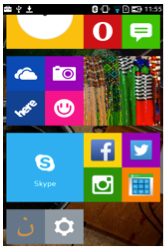
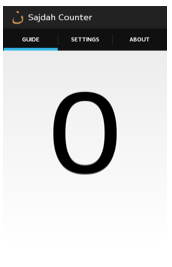
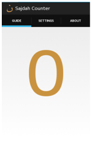
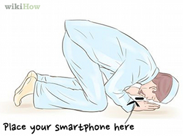

Launch the application on your smartphone.
You will see the app open, on the app screen you will see a big 0 in black color:
To start the app, tap on the black 0, it will change color to a golden-yellow:
This number will show the number of sujood detected by the app.
Position the smartphone on the prayer rug (jaye namaz) such that when you do a sajdah the top end of the phone is just below your chin, then start your namaz/salah:
Once you are have completed your namaz, you can tap on the counter again and the color will change to black, tap on it again to restart.